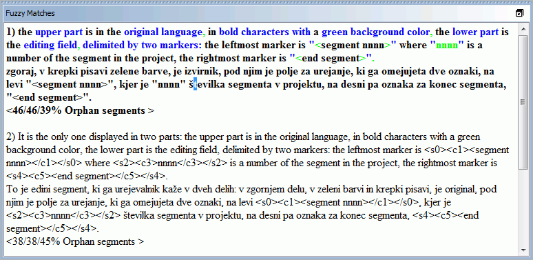

このお手軽スタートガイドでは、OmegaT の基本的な内容のみを説明しています。 OmegaT のあらゆる機能に慣れ親しむためには、ぜひ取扱説明書をお読みください。 ここで［Ctrl+キー］と書かれたショートカットキーは、Mac ユーザーは［cmd+キー］と読み替えてください。 ［cmd］キーには、Apple キーボードでは「command」またはリンゴマークが記されています。
OmegaT の画面は主に 3 つの独立したウィンドウで構成されています。 マウス操作によりそれぞれの大きさを変更できます。 向かって左側には、翻訳を入力する編集ウィンドウがあります。 右側の上部には、参考訳文ウィンドウがあり、翻訳メモリと一致する訳文がもし存在すれば、ここに表示されます。 その下には用語集ウィンドウがあり、用語集と一致する用語が訳文にあれば、ここに表示されます。
OmegaT は翻訳対象の原文に対し、文章（または段落）単位で「分節化」して編集ウインドウに表示します。 翻訳は、分節ごとに 1 つづつ行います。 翻訳し、分節から分節へ移動するたびに、入力した翻訳内容が翻訳メモリに自動記録されていきます。 すべての分節を翻訳し終わったら（または、必要であればその前でも）、OmegaT は翻訳メモリを使用して、翻訳済みの訳文ファイルを target フォルダーに生成します。
OmegaT は 1 つの翻訳作業全体を「翻訳プロジェクト」と呼ぶ単位で管理します。 OmegaT はプロジェクトごとにフォルダーを作成します。 翻訳前の原文ファイルや、もし使用する場合は用語集や翻訳メモリを、その中にそれぞれサブフォルダーを作成して保存します。 また、翻訳済みファイルを格納する target フォルダーも作成します。
メニューから［プロジェクト］→［新規作成...］を選択します。
翻訳プロジェクトを保存したいフォルダーを選択し、ウィンドウ上部の入力欄に、作成したい翻訳プロジェクト名を入力します。 入力した内容がそのまま、プロジェクトフォルダー名になります。このプロジェクトで使用する全てのファイルが、このフォルダー（またはその下のサブフォルダー）に保存されます。
次に、以下のようなウィンドウが表示され、作成するプロジェクトフォルダーの確認や、変更が行えます：
ここではまず、原文と訳文の言語コードが正しく設定されていることを確認してください。その下で、各フォルダーの場所も確認できます。 言語コード（2 文字）または言語-地域コード（2+2 文字）を、リストから選択するか、直接手入力で指定してください。（言語コードは 2 または 3 文字で指定できます。） 翻訳後のファイルが保存される target フォルダーの場所は、特に覚えておいてください。 もし、OmegaT による分節化を「段落」でなく文章ごとに行いたい場合は、分節化規則を確認するとよいでしょう。
これらのプロジェクト設定を確認して［確定］をクリックすると、次に、追加する原文ファイルを選択するウィンドウが表示されます。 選択した個別のファイル、または、選択したフォルダー全体（その中のフォルダーやファイルすべて）を追加できます。 もし誤って別のファイルを追加してしまったり、ファイルを追加しすぎてしまった場合は、（たとえば、OS のファイルマネージャーを使用して）source フォルダーから直接削除できます。
翻訳すべきファイルの一覧は、［翻訳対象ファイル一覧］ ウィンドウで確認してください。（自動的に開かない場合は、メニューの ［プロジェクト］→［翻訳対象ファイル一覧...］ を選択してください） source フォルダーの内容を変更した後は、必ずプロジェクトの再読み込みを行ってください。（メニューの ［プロジェクト］→［再読み込み］） デフォルトでは、OmegaT は一覧の先頭にあるファイルを開きます。 なお、OmegaT が翻訳できるのは対応した形式のファイルのみであり、ファイルフィルターで定義された形式に一致するものだけであることにあらかじめご留意ください。 その他のファイルは無視されます。（一覧に表示されません。）
作業を行うプロジェクトと、翻訳対象のファイルを指定すると、OmegaT は最初の原文ファイルを開き、編集ウィンドウに表示します。 編集対象となる最初の分節が、緑色でハイライト表示されます。原文テキストがその下、訳文となる行にコピーされて表示されます。 （このとき、入力行以外の文字はすべて保護されており、編集できないようになっています。）<分節 0001> と </分節> の間にある原文のテキストを上書きして、翻訳を入力します。 ［Enter］ を押すと、次の分節へ移動できます。 以下の点もご確認ください：
メインメニューの ［表示］ より、編集ウィンドウの設定を変更することができます。（例えば原文テキストを表示するかどうか、ハイライト表示するかどうかなど）
［Enter］を押すと、複数の処理が内部で行われます：OmegaT は 1 組の分節（原文と、対応する翻訳）を翻訳メモリに保存します。またプロジェクトの他のファイルに同一の分節が含まれていれば、それらを全て自動的に翻訳します。 また、次の未翻訳の分節に対して、翻訳メモリや用語集に一致する内容がないか、検索します。
もし OmegaT が次の分節に対して使用できそうな（30% 以上一致した）参考訳文を翻訳メモリ中に見つけた場合、これらを参考訳文ビューアに表示します。 デフォルトでは、最も一致率の高い参考訳文があらかじめ選択された状態で、参考訳文ウィンドウで選択されます。
参考訳文ビューアに表示された参考訳文を訳文入力行に挿入する場合は、以下のようなキーボードのショートカットが使用できます：
Ctrl+I：現在のカーソル位置に、選択した参考訳文を挿入Ctrl+R：現在の訳文全体を、選択した参考訳文に置換もし、翻訳メモリ中に複数の参考訳文が見つかり、最初に選択された以外の参考訳文を使用したい場合は：
Ctrl+2 で 2 番目、Ctrl+3 で 3 番目に表示された参考訳文を選択できます。Ctrl+I または Ctrl+R を上記と同じように使用してください。（分節に移ったときに、指定した一致率以上の最も一致率の高い参考訳文を、自動的に挿入するように設定することもできます。 この設定は［設定］→［翻訳入力行...］で行えます。）
プロジェクトに用語集と辞書が含まれる場合は、その中に一致した項目があれば、それぞれ用語集ウィンドウと辞書ウィンドウに表示されます。
OmegaT は強力な文字列検索機能を備えています。 ［Ctrl+F］で文字列検索ウィンドウを開き、［検索文字列］欄に検索したい単語または語句を入力します。 または、表示された全ての文字列から、単語や語句を選択して［Ctrl+F］を押します。 すると［検索文字列］欄には、自動的にその文字列が入力された状態になります。
Google Translate ウィンドウには、現在の分節に対応した Google Translate による翻訳内容を自動的に表示できます。 Ctrl+M を押すと、編集中の訳文の箇所に置換されます。
すべての分節を翻訳し終わったら（または、希望すればその前でも）、翻訳メモリに蓄積された翻訳内容を使用し、訳文ファイルを更新できます。 この操作を行うには、メニューから［プロジェクト］→［訳文ファイル生成］を選択してください。 OmegaT は、そのプロジェクトの source フォルダーにあるすべての翻訳対象ファイルに対して、翻訳済みでないものが含まれていても、訳文ファイルを生成します。 完全に、または部分的に翻訳されたファイルが、プロジェクトの target フォルダーに保存されます。 翻訳作業を完成させる段階では、もともと関連づけられたアプリケーション（ブラウザやワードプロセッサなど）で訳文ファイルを開き、翻訳内容や形式が合っているかを確認してください。 さらに修正するため、OmegaT に戻ってくることもできます。その場合は忘れずに、訳文ファイルの生成を再度行ってください。
OmegaT は、原文文書の見映え（太字や斜体などの情報）を失わないため、特殊なタグを使って、文書に目印を付けます。 OmegaT で使用するタグは、アルファベット 1 文字以上と、その後に続く 1 文字以上の数字から構成されます。閉じタグは「/」文字で表します。（例えば：<f0>、</f0>、<br>、</s2> など。） タグが含まれる分節を翻訳する場合は、必ず訳文にもそのタグが含まれるように注意してください（タグ操作 をご参照ください）
以下に示す例では、見やすくするためタグの箇所を色つきで表示していますが、 OmegaT 上ではこのように色つきでは表示されません。 青字 で示した HTML タグは、この分節全体を含んでいるため OmegaT はこれを無視して処理します。 緑字で示したタグはこの分節の中にあるため、 OmegaT は処理される必要があります。 以下は HTML ファイルにある分節の一例です：
<p>A different display font can be
selected via the <b>Display Font</b> dialog. Open it via the <i>Settings</i> →
<i>Display Font...</i> menu item. The font type and size can be changed
from the dialog.</p>
これらの分節が OmegaT 内でどう表示されるのかと、例としてアフリカーンス語に翻訳した場合を以下に示します：

OmegaT により作成された訳文 HTML ファイルはこのような形になります：

OmegaT は、訳文ファイルに存在するタグの入力間違いを自動的には検出しません。 翻訳文書を顧客へ手渡す前に、タグの間違いがないかを確認する必要があります。
メニューから［ツール］→［タグ検証］を選択してください。 原文と訳文の比較により、タグが合致していない分節の一覧表が表示されます。 分節番号をクリックすると、 その分節が編集ウィンドウに自動的に表示され、実際のタグの確認と修正を行えます。 ［Enter］でその分節の修正内容を確定した後、 再度 ［Ctrl+T］ でタグ検証結果を確認してください。
タグの間違いが存在すると、文書そのものが開かなくなる場合もあります。 したがって、最終的な翻訳ファイルとして仕上げる前に、タグの間違いをすべて修正しておくべきです。 最後に、翻訳したファイルのビューアやエディタで実際にそれを開き、見映えに問題がないかを確認してください。
いくつかのプログラミング言語（PHP や C など）には、printf 関数と組み合わせて、特別なタグがプレースホルダーとして用いられることがあります。 OmegaT では、設定を有効にすれば、それらを検出し、検証の対象にすることができます。 メニューから［設定］→［タグ検証...］を選択してください。 簡単な検証、または完全な検証のいずれかを選択できます。 簡単な検証では、プレースホルダーとして使用される可能性のある変数のみが使用されます。 この設定は、原文のプログラミングコードに含まれるプレースホルダーが多くなく、誤検出が頻繁に生じてしまうような場合に便利です。